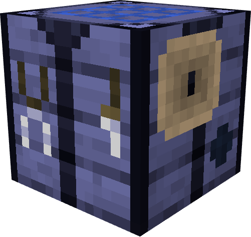
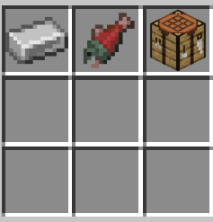

Marine Workbench

Use
The Marine Workbench is an essential block used to craft items that use items added by Blue Depths as ingredients. Without it, you cannot craft items like the electrode or crocodile armor. In order to use it, you simply place it down, right click it (or whatever button you use to interact with blocks) and you will be greeted with the GUI similar to a crafting table where you can craft items using a specific pattern. On a successful craft, all of the ingredients will be consumed and the desired product will appear at the center slot of the crafting grid.
Crafting the Marine Workbench
In order to obtain the Marine Workbench, players can craft it using a regular crafting table or using the crafting grid that is in their inventory. All you need are:
- Crafting Table x1
- Salmon x1
- Iron Ingot x1
Once you have to items, you can simple place them into the crafting grid in any order, since the pattern shape does not matter. However, below is an image of an example of the many ways you can craft the workbench:

History
Development History
| Datapack Version | Addition/Change |
|---|---|
| 1.2.0 (Roaring Rivers Part 1: Shocking Snap) | Added the Marine Workbench with all functionality and crafting recipe |